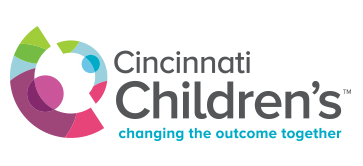

WORK EXPERIENCE
Data Science Intern
Company: Cincinnati Childrens Medical Hospital Center
Location: Cincinnati, Ohio
Dates: May 2017 to Dec 2017
Project#1: LPDR (Longitudnal Pediatric Data Resource)-:
- Development of Python libraries for cross project utilization.
- Python applications to handle raw data, PostgreSql database and online apis together.
- Building Pythonic data quality analysis and statistical comparison software.
- Launching Python-Django based web apps associated with visualizations and interactive UI.
- Analysis of insights such as disease recurrence and patient readmissions.
Skills/Technologies Utilized: Python, SQL, Web-Development-HTML / CSS / Javascript, MS-Excel, Statistics/Machine Learning, REST Web Services
Data Analyst
Company: Learning Assistance Center, University of Cincinnati
Location: Cincinnati, Ohio
Dates: Aug 2015 to Aug 2017
Project#1: Blackboard Website Data Scraping-:
- Development of Python-Selenium based web scraping software which crawls a website, gathers data, cleans it and generates an excel file for further use.
- Deploying many customized applications as mentioned, depending on department and requirement.
Project#2: Tutortrac data acquisition/cleaning-:
- Generation of clean data from unstructured raw datafiles generated from the Tutortrac data generation system.
- Deployed Pythonic application to perform the task and result user friendly files and formats.
- Organizing and syncing with University of Cincinnati data warehouse data.
- Reduced human data collection and cleaning time from 2-3 hours into seconds.
Project#3: Sentiment Analysis of Surveys-:
- Establishing Python applications to glean review scores,mood and similarity from textual survey data.
Project#4: Analysis and Prediction of GPA, GRE, SAT scores based on involvement with LAC services-:
- Running regression models based on session parameters to find correlation between performance and student involvement with the departmental services.
- Comaparative performance analysis amongst various services offered.
Project#5: Gleaning utilization, staffing and budget insights through data analysis-:
- Analyzing data to estimate staffing productivity at different departments and times of the day and hence the budget allotment.
- Using Tableau to generate compelling dashboards to analyze the performance of system of events.
- Generating dashboards to perform historical comparison and challenge the status quo.
Project#6: Analysis by statistical scores and tests on student performance data-:
- Developed a standard data acquisition and cleaning system using R statistical software.
- Performed statistical tests and compaisons on the cleaned data.
Project#7: Staff Tracking Management-:
- Simulated RDBMS tracking and organization of staff data using access and VBA.
- Developed multiple user interfaces well established by complex SQL queries and procedures to update records and send auto mails as per the task.
Project#8: Excel Chart Automation-:
- Utlized VBA to create an auto chart generation interface for excel.
- Implemented nested pivot tables and pivot charts to arrive at requisite reults.
- Reduced user input to just copying data within a dynamic table in excel.
Skills/Technologies Utilized: Python, SQL, R, Tableau, Web-Development-HTML / CSS / Javascript, MS-Excel, Statistics/ Machine Learning/ Natual Language Processing, REST Web Services.
SKILLS
EDUCATION
University of Cincinnati
Cincinnati, Ohio
Masters In EE
CEAS-Department of EECS
GPA 3.83/4
2013-2017
GRADUATED
IIIT-Bhubaneswar
Bhubaneswar, Odisha
India
Masters In ETC
GPA 8.71/10
2009-2013
GRADUATED
Click on each project to know more about it.
This project aims to perform search string optimization in the search process of Ebay consumer website. Access to the Ebay Api has been legally obtained through public developer keys.
Objective
Given a search string, query the complete ebay database and list the top 100 results which match the context and topics of the passed search string.
This projects uses standard NLTK python distribution and NLP algorithms to find a consistent measure of similarity and tries to match inventory items along with the search string. It must be noted that the comparison process must be fast and efficient in nature so as to be able to generate a working, deployable system. Once the results are finalized, the list is displayed and that would be the list displayed in the search results when actually implemented.
This project aims to solve Quoras question similarity challenge. The data used is the publicly released data by Quora regarding training and testing material for the challenge.
Objective
Given a user attempting to submit a question, check the similarity of that question with already existing questions and suggest if it is a duplicate or not.
This projects uses standard NLTK python distribution and NLP algorithms to find a consistent measure of similarity and tries to match the current question along with the existing questions. A match threshold can be implemented and if there is a similarity beyond that, then it can be deemed as duplicate.
Github_LinkThis project aims to predict scores and mood of students who are the main sources of surveys. It is a way to understand the non verbal aspects gleaned by students within the tutoring atmosphere.
Objective
Given a lot of surveys, estimate the mood of the tutoring session. Alo, estimate the missing scores in the survey.
LAC is a tutoring service provided to bachelors students at the University of Cincinnati. There are 5 major departments and each deal with a unique tutoring atmosphere. Each student who undergoes these kind of sessions are generally required to submit surveys regarding their experiences. These surveys help the decision makers know the performance of a session and its tutor. This project aims to automate the process of estimating the mood. Different kinds of survey text and words are aggregated into dictionaries representing level of mood and performance expected from a session. Then NLP is used to remove noisy parts within a prospective survey and make a similarity/context match with a pre-existing expected level. Also, in case a score is missing, the mood is utilized to populate the score.
This project is a concrete example of a full life cycle data science project. Data is collected, cleaned, analyzed and conclusions are made with a well developed website kind of visualization.
Objective
Given Airbnb rental data and Zillow housing data, estimate the best zipcodes in New York city to invest so as to have best results.
A zipcode which provides a decent amount of revenue, backed by a good house market value and the prospect of higher business opportunity is supposed to be a good candidate and should be in the chosen list of zipcodes to invest. Thus, such individual aspects need to be analyzed leading to a conclusion regarding the final candidate list of zipcodes. There are several factors such as Revenue Analysis, Return on Investment, Market Concentration, Real estate market values and tourism prospects etc. which are analyzed before arriving at a sane conclusion.
Check out the code and download the documentation module to see the results for yourself !!
Github_LinkThis project is a concrete example of a full life cycle data science project. Data is collected, cleaned, analyzed and conclusions are made with different kind of insightful visualizations.
Objective
Given House loan market data, analyze the eastern states of USA and find which state is better for a new entrant and according to what conditions.
There are several critical factors like population, rate of interest, future forecast etc. to consider before entering the business which are covered to support the analysis. All such parameters have been analysed and the visuals for the same can be generated using the code in the github link.
Github_LinkThis project is a full life cycle data science work. Data is collected, cleaned, modelled and researched, simulated with optimizations and finally followed by insightful visualizations.
Objective
Given Forex(Foreign Exchange) i.e. currency time series data from three major developing countries, predict the flow/changes of currency exchange values.This project shows how the performance of the basic Local Linear Wavelet Neural Network model (LLWNN) can be improved with hybridizing it with a fuzzy model. The new improved LLWNN based Neurofuzzy hybrid model is used to predict two currency exchange rates i. e. the U. S. Dollar to the Indian Rupee and the U. S. Dollar to the Japanese Yen. The forecasting of foreign exchange rates is done on different time horizons for 1 day, 1 week and 1 month ahead. The LLWNN and Neurofuzzy hybrid models are trained with the backpropagation training algorithm. The two performance measurers i. e. the Root Mean Square Error (RMSE) and the Mean Absolute Percentage Error (MAPE) show the superiority of the Neurofuzzy hybrid model over the LLWNN model.
Github_LinkThis project is a full life cycle data science work. Data is collected, cleaned, modelled and researched, simulated with optimizations and finally followed by insightful visualizations.
Objective
Given stock market data from major stock sources, predict the volatility and changes of the values. Also, optimize the algorithms with swarm inspired methods.
Swarm networks are a new class of neural networks which are inspired by swarm intelligence. Swarm intelligence is the property of co-ordinated behaviour seen amongst the social organisms. The simple local interaction of the swarm members results in complex and intelligent global behaviour. This phenomenon is adapted in swarm intelligence so as to solve many problems.This paper presents a comparative study of particle swarm optimization (PSO) based hybrid swarmnet and simple FLANN model. Here both the models are initially trained with LMS algorithm, then with PSO algorithm. The models are forecasting the stock indices of two different datasets i.e. NIFTY and NASDAQ on different time horizons i.e. one day, one week, and one month ahead. The performance is evaluated on the basis of Root Mean Square Error (RMSE) and Mean Absolute Percentage Error (MAPE). It was verified that PSO based hybrid swarmnet performed better in comparison to PSO based FLANN model, simple hybrid model trained with LMS and simple FLANN model trained with LMS.
This project is a full life cycle data science work. It is the topic of my Masters Thesis Research. Data is collected, cleaned, modelled and researched, simulated with optimizations and finally followed by insightful visualizations. Two innovative algorithms are research and modelled into achieving the segmentation operations.
Objective
Research innovative algorithms to perform the image segmentation operation in the process of skin cancer detection.
The purpose of this project is to research innovative segmentation algorithms that will be the part of skin cancer detection process. As a part of the thesis, two application specific modeled algorithms have been designed to perform the process of segmentation, which is the second step in the overall process of classification of the image into various cancerous categories. A novel attempt to use a clustering based algorithm to address a segmentation task has been attempted and achieved through this research. Images have been considered in the gray scale mode and an attempt has been made to extract maximum results without color information. Both algorithms developed involve training and testing phases. Also, they are inspired by the power of Neural Networks. Once the segmentation is done, various performance metrics have been calculated and reported along with visual aid regarding how well the segmentation occurred. The performance has also been compared with the commonly used methods in image segmentation and the advantages as well as performance factors are well critiqued and documented to provide a holistic view related to the usage of such algorithms in the concerned topic of skin cancer segmentation. Experimental testing has also been done with images having pre-known ground truth information and the resulting segmented portions as well as quality has been shown.